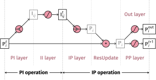

The PiNet network
The PiNet network implements the network architecture described in our paper.1 The network architecture features the graph-convolution which recursively generates atomic properties from local environment. One distinctive feature of PiNet is that the convolution operation is realized with pairwise functions whose form are determined by the pair, called pairwise interactions.
Network architecture
The overall architecture of PiNet is illustrated with the graph convolution block below:

We classify the latent variables into the atom-centered "properties" (\(\mathbb{P}\)) and the pair-wise "interactions" (\(\mathbb{I}\)) in our notation. Since the layers that transform \(\mathbb{P}\to\mathbb{P}\) or \(\mathbb{I}\to\mathbb{I}\) are usually standard feed-forward neural networks (FF layers), the more important part of PiNet are the PI and IP layers, which transform between those two types of variables.
The operations are generally grouped into the PI and IP operations that
constitutes a GC block, which can be further composed of individual layers, as
shown above. Each of the layers is sub-classed from tf.keras.layers.Layer. The
PiNet class provides a few parameters to control those layers. Check the layer
specification below for more detailed description of the layers.
Network specification
pinet.PiNet
tf.keras.Model for the PiNet network
__init__(self, atom_types=[1, 6, 7, 8], rc=4.0, cutoff_type='f1', basis_type='polynomial', n_basis=4, gamma=3.0, center=None, pp_nodes=[16, 16], pi_nodes=[16, 16], ii_nodes=[16, 16], out_nodes=[16, 16], out_units=1, out_pool=False, act='tanh', depth=4)
special
Parameters:
| Name | Type | Description | Default |
|---|---|---|---|
atom_types |
list |
elements for the one-hot embedding |
[1, 6, 7, 8] |
pp_nodes |
list |
number of nodes for PPLayer |
[16, 16] |
pi_nodes |
list |
number of nodes for PILayer |
[16, 16] |
ii_nodes |
list |
number of nodes for IILayer |
[16, 16] |
out_nodes |
list |
number of nodes for OutLayer |
[16, 16] |
depth |
int |
number of interaction blocks |
4 |
rc |
float |
cutoff radius |
4.0 |
basis_type |
string |
basis function, can be "polynomial" or "gaussian" |
'polynomial' |
n_basis |
int |
number of basis functions to use |
4 |
gamma |
float or array |
width of gaussian function for gaussian basis |
3.0 |
center |
float or array |
center of gaussian function for gaussian basis |
None |
cutoff_type |
string |
cutoff function to use with the basis. |
'f1' |
act |
string |
activation function to use |
'tanh' |
preprocess |
bool |
whether to return the preprocessed tensor |
required |
call(self, tensors)
PiNet takes batches atomic data as input, the following keys are required in the input dictionary of tensors:
ind_1: sparse indices for the batched data, with shape(n_atoms, 2);elems: element (atomic numbers) for each atom, with shape(n_atoms);coord: coordintaes for each atom, with shape(n_atoms, 3).
Optionally, the input dataset can be processed with
PiNet.preprocess(tensors), which adds the following tensors to the
dictionary:
ind_2: sparse indices for neighbour list, with shape(n_pairs, 2);dist: distances from the neighbour list, with shape(n_pairs);diff: distance vectors from the neighbour list, with shape(n_pairs, 3);prop: initial properties(n_pairs, n_elems);
Parameters:
| Name | Type | Description | Default |
|---|---|---|---|
tensors |
dict of tensors |
input tensors |
required |
Returns:
| Type | Description |
|---|---|
tensor |
output tensor with shape |
Layer specifications
pinet.FFLayer
The FFLayer is a shortcut to create a multi-layer perceptron (MLP) or a
feed-forward network. A FFLayer takes one tensor as input of arbitratry
shape, and parse it to a list of tf.keras.layers.Dense layers, specified
by n_nodes. Each dense layer transforms the input variable as:
, where \(W_{kl}\), \(b_{l}\) are the learnable weights and biases, \(h\) is the
activation function, and \(\mathbb{X}\) can be \(\mathbb{P}_{ik}\) or
\(\mathbb{I}_{ijk}\) with \(k,l\) being the number of input/output channels. The
keyward arguments are parsed into the class, which can be used to specify
the bias, activation function, etc for the dense layer. FFLayer outputs a
tensor with the shape [..., n_nodes[-1]].
In the PiNet architecture, PPLayer and IILayer are both instances of the
FFLayer class, with the difference that IILayers have their baises set
to zero to avoid discontinuity in the model output.
__init__(self, n_nodes=[64, 64], **kwargs)
special
Parameters:
| Name | Type | Description | Default |
|---|---|---|---|
n_nodes |
list |
dimension of the layers |
[64, 64] |
**kwargs |
dict |
options to be parsed to dense layers |
{} |
call(self, tensor)
Parameters:
| Name | Type | Description | Default |
|---|---|---|---|
tensor |
tensor |
tensor with shape |
required |
Returns:
| Type | Description |
|---|---|
tensor |
tensor with shape |
pinet.PILayer
The PILayer takes the properties (\(\mathbb{P}_{ik}, \mathbb{P}_{jk}\)) of a pair of atoms as input and outputs a set of interactions for each pair. The input \(\mathbb{P}_{i}, \mathbb{P}_{j}\) will be concatenated as the input of a feed-forward neural network (FFLayer), and the interactions are generated by taking the output of the FFLayer as weights of radial basis functions, i.e.:
, where \(\mathbb{I}^{w}_{ij(bl)}\) is an intemediate weigh tensor for the radial basis functions, output by the FFLayer, \(b\) is the index for the basis function and \(l\) is the index for output interaction.
n_nodes specifies the number of nodes in the FFLayer. Note that the last
element of n_nodes specifies the number of output channels after applying
the basis function (\(l\) instead of \(bl\)), i.e. the output dimension of
FFLayer is [pairs,n_nodes[-1]*n_basis], the output is then summed with the
basis to form the output interaction.
__init__(self, n_nodes=[64], **kwargs)
special
Parameters:
| Name | Type | Description | Default |
|---|---|---|---|
n_nodes |
number of nodes to use |
[64] |
|
**kwargs |
keyword arguments will be parsed to the feed forward layers |
{} |
call(self, tensors)
PILayer take a list of three tensors as input:
- ind_2: sparse indices of pairs with shape
(n_pairs, 2) - prop: property tensor with shape
(n_atoms, n_prop) - basis: interaction tensor with shape
(n_pairs, n_basis)
Parameters:
| Name | Type | Description | Default |
|---|---|---|---|
tensors |
list of tensors |
list of |
required |
Returns:
| Type | Description |
|---|---|
tensor |
interaction tensor with shape |
pinet.IPLayer
The IPLayer transforms pairwise interactions to atomic properties
The IPLayer has no learnable variables and simply sums up the pairwise interations. Thus the returned property has the same shape with the input interaction, i.e.:
__init__(self)
special
IPLayer does not require any parameter, initialize as IPLayer()
call(self, tensors)
IPLayer take a list of three tensors list as input:
- ind_2: sparse indices of pairs with shape
(n_pairs, 2) - prop: property tensor with shape
(n_atoms, n_prop) - inter: interaction tensor with shape
(n_pairs, n_inter)
Parameters:
| Name | Type | Description | Default |
|---|---|---|---|
tensors |
list of tensor |
list of [ind_2, prop, inter] tensors |
required |
Returns:
| Type | Description |
|---|---|
tensor |
new property tensor with shape |
pinet.ResUpdate
The ResUpdate layer implements ResNet-like update of properties that addresses vanishing/exploding gradient problems (see arXiv:1512.03385).
It takes two tensors (old and new) as input, the tensors should have the same shape except for the last dimension, and a tensor with the shape of the new tensor is always returned.
If shapes of the two tensors match, their sum is returned. If the two tensors' shapes differ in the last dimension, the old tensor will be added to the new after a learnable linear transformation that matches its shape to the new tensor, i.e.:
, where \(W_{kl}\) is a learnable weight matrix if needed.
__init__(self)
special
ResUpdate does not require any parameter, initialize as ResUpdate()
call(self, tensors)
Parameters:
| Name | Type | Description | Default |
|---|---|---|---|
tensors |
list of tensors |
two tensors with matching shapes expect the last dimension |
required |
Returns:
| Type | Description |
|---|---|
tensor |
updated tensor with the same shape as the second input tensor |
pinet.OutLayer
The OutLayer is a simple combination of the FFLayer and the ResUpdate
layer, where the out_units controls the dimension of outputs. In addition
to the FFLayer, the OutLayer has one additional linear biasless layer that
scales the outputs.
__init__(self, n_nodes, out_units, **kwargs)
special
Parameters:
| Name | Type | Description | Default |
|---|---|---|---|
n_nodes |
list |
dimension of the hidden layers |
required |
out_units |
in |
dimension of the output units |
required |
**kwargs |
dict |
options to be parsed to dense layers |
{} |
call(self, tensors)
OutLayer takes a list of three tensors as input:
- ind_1: sparse indices of atoms with shape
(n_atoms, 2) - prop: property tensor with shape
(n_atoms, n_prop) - prev_output: previous output with shape
(n_atoms, out_units)
Parameters:
| Name | Type | Description | Default |
|---|---|---|---|
tensors |
list of tensors |
list of [ind_1, prop, prev_output] tensors |
required |
Returns:
| Type | Description |
|---|---|
tensor |
an updated output tensor with shape |
Source Code
pinn/networks/pinet.py
# -*- coding: utf-8 -*-
import tensorflow as tf
from pinn.utils import pi_named, connect_dist_grad
from pinn.layers import (
CellListNL,
CutoffFunc,
PolynomialBasis,
GaussianBasis,
AtomicOnehot,
ANNOutput,
)
class FFLayer(tf.keras.layers.Layer):
"""The FFLayer is a shortcut to create a multi-layer perceptron (MLP) or a
feed-forward network. A FFLayer takes one tensor as input of arbitratry
shape, and parse it to a list of `tf.keras.layers.Dense` layers, specified
by `n_nodes`. Each dense layer transforms the input variable as:
$$
\\begin{aligned}
\mathbb{X}'_{\ldots{}l} &= \mathrm{Dense}(\mathbb{X}_{\ldots{}k}) \\\\
&= h\left( \sum_k W_{kl} \mathbb{X}_{\ldots{}k} + b_{l} \\right)
\end{aligned}
$$
, where $W_{kl}$, $b_{l}$ are the learnable weights and biases, $h$ is the
activation function, and $\mathbb{X}$ can be $\mathbb{P}_{ik}$ or
$\mathbb{I}_{ijk}$ with $k,l$ being the number of input/output channels. The
keyward arguments are parsed into the class, which can be used to specify
the bias, activation function, etc for the dense layer. `FFLayer` outputs a
tensor with the shape `[..., n_nodes[-1]]`.
In the PiNet architecture, `PPLayer` and `IILayer` are both instances of the
`FFLayer` class, with the difference that `IILayer`s have their baises set
to zero to avoid discontinuity in the model output.
"""
def __init__(self, n_nodes=[64, 64], **kwargs):
"""
Args:
n_nodes (list): dimension of the layers
**kwargs (dict): options to be parsed to dense layers
"""
super(FFLayer, self).__init__()
self.dense_layers = [
tf.keras.layers.Dense(n_node, **kwargs) for n_node in n_nodes
]
def call(self, tensor):
"""
Args:
tensor (tensor): tensor with shape `(...,k)` as input
Returns:
tensor: tensor with shape `(...,n_nodes[-1])`
"""
for layer in self.dense_layers:
tensor = layer(tensor)
return tensor
class PILayer(tf.keras.layers.Layer):
"""The PILayer takes the properties ($\mathbb{P}_{ik}, \mathbb{P}_{jk}$) of
a pair of atoms as input and outputs a set of interactions for each pair.
The input $\mathbb{P}_{i}, \mathbb{P}_{j}$ will be concatenated as the input
of a feed-forward neural network (FFLayer), and the interactions are
generated by taking the output of the FFLayer as weights of radial basis
functions, i.e.:
$$
\\begin{aligned}
\mathbb{I}^{w}_{ij(bl)} &= \mathrm{FFLayer}(\mathbb{P}_{ik}\Vert\mathbb{P}_{jk}) \\\\
\mathbb{I}_{ijl} &= \sum_b \mathbb{I}^{w}_{ij(bl)} \cdot e_{ijb}
\end{aligned}
$$
, where $\mathbb{I}^{w}_{ij(bl)}$ is an intemediate weigh tensor for the
radial basis functions, output by the FFLayer, $b$ is the index for the
basis function and $l$ is the index for output interaction.
`n_nodes` specifies the number of nodes in the FFLayer. Note that the last
element of n_nodes specifies the number of output channels after applying
the basis function ($l$ instead of $bl$), i.e. the output dimension of
FFLayer is `[pairs,n_nodes[-1]*n_basis]`, the output is then summed with the
basis to form the output interaction.
"""
def __init__(self, n_nodes=[64], **kwargs):
"""
Args:
n_nodes: number of nodes to use
**kwargs: keyword arguments will be parsed to the feed forward layers
"""
super(PILayer, self).__init__()
self.n_nodes = n_nodes
self.kwargs = kwargs
def build(self, shapes):
""""""
self.n_basis = shapes[2][-1]
n_nodes_iter = self.n_nodes.copy()
n_nodes_iter[-1] *= self.n_basis
self.ff_layer = FFLayer(n_nodes_iter, **self.kwargs)
def call(self, tensors):
"""
PILayer take a list of three tensors as input:
- ind_2: sparse indices of pairs with shape `(n_pairs, 2)`
- prop: property tensor with shape `(n_atoms, n_prop)`
- basis: interaction tensor with shape `(n_pairs, n_basis)`
Args:
tensors (list of tensors): list of `[ind_2, prop, basis]` tensors
Returns:
tensor: interaction tensor with shape `(n_pairs, n_nodes[-1])`
"""
ind_2, prop, basis = tensors
ind_i = ind_2[:, 0]
ind_j = ind_2[:, 1]
prop_i = tf.gather(prop, ind_i)
prop_j = tf.gather(prop, ind_j)
inter = tf.concat([prop_i, prop_j], axis=-1)
inter = self.ff_layer(inter)
inter = tf.reshape(inter, [-1, self.n_nodes[-1], self.n_basis])
inter = tf.einsum("pcb,pb->pc", inter, basis)
return inter
class IPLayer(tf.keras.layers.Layer):
"""The IPLayer transforms pairwise interactions to atomic properties
The IPLayer has no learnable variables and simply sums up the pairwise
interations. Thus the returned property has the same shape with the
input interaction, i.e.:
$$
\\begin{aligned}
\mathbb{P}_{ik} = \mathrm{IPLayer}(\mathbb{I}_{ijk}) = \sum_{j} \mathbb{I}_{ijk}
\end{aligned}
$$
"""
def __init__(self):
"""
IPLayer does not require any parameter, initialize as `IPLayer()`
"""
super(IPLayer, self).__init__()
def call(self, tensors):
"""
IPLayer take a list of three tensors list as input:
- ind_2: sparse indices of pairs with shape `(n_pairs, 2)`
- prop: property tensor with shape `(n_atoms, n_prop)`
- inter: interaction tensor with shape `(n_pairs, n_inter)`
Args:
tensors (list of tensor): list of [ind_2, prop, inter] tensors
Returns:
tensor: new property tensor with shape `(n_atoms, n_inter)`
"""
ind_2, prop, inter = tensors
n_atoms = tf.shape(prop)[0]
return tf.math.unsorted_segment_sum(inter, ind_2[:, 0], n_atoms)
class OutLayer(tf.keras.layers.Layer):
"""The OutLayer is a simple combination of the FFLayer and the ResUpdate
layer, where the `out_units` controls the dimension of outputs. In addition
to the FFLayer, the OutLayer has one additional linear biasless layer that
scales the outputs.
"""
def __init__(self, n_nodes, out_units, **kwargs):
"""
Args:
n_nodes (list): dimension of the hidden layers
out_units (in): dimension of the output units
**kwargs (dict): options to be parsed to dense layers
"""
super(OutLayer, self).__init__()
self.out_units = out_units
self.ff_layer = FFLayer(n_nodes, **kwargs)
self.out_units = tf.keras.layers.Dense(
out_units, activation=None, use_bias=False
)
def call(self, tensors):
"""
OutLayer takes a list of three tensors as input:
- ind_1: sparse indices of atoms with shape `(n_atoms, 2)`
- prop: property tensor with shape `(n_atoms, n_prop)`
- prev_output: previous output with shape `(n_atoms, out_units)`
Args:
tensors (list of tensors): list of [ind_1, prop, prev_output] tensors
Returns:
tensor: an updated output tensor with shape `(n_atoms, out_units)`
"""
ind_1, prop, prev_output = tensors
prop = self.ff_layer(prop)
output = self.out_units(prop) + prev_output
return output
class GCBlock(tf.keras.layers.Layer):
def __init__(self, pp_nodes, pi_nodes, ii_nodes, **kwargs):
super(GCBlock, self).__init__()
iiargs = kwargs.copy()
iiargs.update(use_bias=False)
self.pp_layer = FFLayer(pp_nodes, **kwargs)
self.pi_layer = PILayer(pi_nodes, **kwargs)
self.ii_layer = FFLayer(ii_nodes, **iiargs)
self.ip_layer = IPLayer()
def call(self, tensors):
ind_2, prop, basis = tensors
prop = self.pp_layer(prop)
inter = self.pi_layer([ind_2, prop, basis])
inter = self.ii_layer(inter)
prop = self.ip_layer([ind_2, prop, inter])
return prop
class ResUpdate(tf.keras.layers.Layer):
"""The ResUpdate layer implements ResNet-like update of properties that
addresses vanishing/exploding gradient problems (see
[arXiv:1512.03385](https://arxiv.org/abs/1512.03385)).
It takes two tensors (old and new) as input, the tensors should have the
same shape except for the last dimension, and a tensor with the shape of the
new tensor is always returned.
If shapes of the two tensors match, their sum is returned. If the two
tensors' shapes differ in the last dimension, the old tensor will be added
to the new after a learnable linear transformation that matches its shape to
the new tensor, i.e.:
$$
\\begin{aligned}
\mathbb{X}'_{\ldots{}l} &= \mathrm{ResUpdate}(\mathbb{X}^{\mathrm{old}}_{\ldots{}k},\mathbb{X}^{\mathrm{new}}_{\ldots{}l}) & \\\\
&= \\begin{cases}
\mathbb{X}^{\mathrm{old}}_{\ldots{}k} + \mathbb{X}^{\mathrm{new}}_{\ldots{}l} & \\textrm{, if} k = l \\\\
\sum_{k} W_{kl} \mathbb{X}^{\mathrm{old}}_{\ldots{}k} + \mathbb{X}^{\mathrm{new}}_{\ldots{}l} & \\textrm{, if} k \\ne l \\\\
\end{cases}
\end{aligned}
$$
, where $W_{kl}$ is a learnable weight matrix if needed.
"""
def __init__(self):
"""
ResUpdate does not require any parameter, initialize as `ResUpdate()`
"""
super(ResUpdate, self).__init__()
def build(self, shapes):
""""""
assert isinstance(shapes, list) and len(shapes) == 2
if shapes[0][-1] == shapes[1][-1]:
self.transform = lambda x: x
else:
self.transform = tf.keras.layers.Dense(
shapes[1][-1], use_bias=False, activation=None
)
def call(self, tensors):
"""
Args:
tensors (list of tensors): two tensors with matching shapes expect the last dimension
Returns:
tensor: updated tensor with the same shape as the second input tensor
"""
old, new = tensors
return self.transform(old) + new
class PreprocessLayer(tf.keras.layers.Layer):
def __init__(self, atom_types, rc):
super(PreprocessLayer, self).__init__()
self.embed = AtomicOnehot(atom_types)
self.nl_layer = CellListNL(rc)
def call(self, tensors):
tensors = tensors.copy()
for k in ["elems", "dist"]:
if k in tensors.keys():
tensors[k] = tf.reshape(tensors[k], tf.shape(tensors[k])[:1])
if "ind_2" not in tensors:
tensors.update(self.nl_layer(tensors))
tensors["prop"] = tf.cast(
self.embed(tensors["elems"]), tensors["coord"].dtype
)
return tensors
class PiNet(tf.keras.Model):
"""tf.keras.Model for the PiNet network"""
def __init__(
self,
atom_types=[1, 6, 7, 8],
rc=4.0,
cutoff_type="f1",
basis_type="polynomial",
n_basis=4,
gamma=3.0,
center=None,
pp_nodes=[16, 16],
pi_nodes=[16, 16],
ii_nodes=[16, 16],
out_nodes=[16, 16],
out_units=1,
out_pool=False,
act="tanh",
depth=4,
):
"""
Args:
atom_types (list): elements for the one-hot embedding
pp_nodes (list): number of nodes for PPLayer
pi_nodes (list): number of nodes for PILayer
ii_nodes (list): number of nodes for IILayer
out_nodes (list): number of nodes for OutLayer
depth (int): number of interaction blocks
rc (float): cutoff radius
basis_type (string): basis function, can be "polynomial" or "gaussian"
n_basis (int): number of basis functions to use
gamma (float or array): width of gaussian function for gaussian basis
center (float or array): center of gaussian function for gaussian basis
cutoff_type (string): cutoff function to use with the basis.
act (string): activation function to use
preprocess (bool): whether to return the preprocessed tensor
"""
super(PiNet, self).__init__()
self.depth = depth
self.preprocess = PreprocessLayer(atom_types, rc)
self.cutoff = CutoffFunc(rc, cutoff_type)
if basis_type == "polynomial":
self.basis_fn = PolynomialBasis(n_basis)
elif basis_type == "gaussian":
self.basis_fn = GaussianBasis(center, gamma, rc, n_basis)
self.res_update = [ResUpdate() for i in range(depth)]
self.gc_blocks = [GCBlock([], pi_nodes, ii_nodes, activation=act)]
self.gc_blocks += [
GCBlock(pp_nodes, pi_nodes, ii_nodes, activation=act)
for i in range(depth - 1)
]
self.out_layers = [OutLayer(out_nodes, out_units) for i in range(depth)]
self.ann_output = ANNOutput(out_pool)
def call(self, tensors):
"""PiNet takes batches atomic data as input, the following keys are
required in the input dictionary of tensors:
- `ind_1`: sparse indices for the batched data, with shape `(n_atoms, 2)`;
- `elems`: element (atomic numbers) for each atom, with shape `(n_atoms)`;
- `coord`: coordintaes for each atom, with shape `(n_atoms, 3)`.
Optionally, the input dataset can be processed with
`PiNet.preprocess(tensors)`, which adds the following tensors to the
dictionary:
- `ind_2`: sparse indices for neighbour list, with shape `(n_pairs, 2)`;
- `dist`: distances from the neighbour list, with shape `(n_pairs)`;
- `diff`: distance vectors from the neighbour list, with shape `(n_pairs, 3)`;
- `prop`: initial properties `(n_pairs, n_elems)`;
Args:
tensors (dict of tensors): input tensors
Returns:
tensor: output tensor with shape `[n_atoms, out_nodes]`
"""
tensors = self.preprocess(tensors)
fc = self.cutoff(tensors["dist"])
basis = self.basis_fn(tensors["dist"], fc=fc)
output = 0.0
for i in range(self.depth):
prop = self.gc_blocks[i]([tensors["ind_2"], tensors["prop"], basis])
output = self.out_layers[i]([tensors["ind_1"], prop, output])
tensors["prop"] = self.res_update[i]([tensors["prop"], prop])
output = self.ann_output([tensors["ind_1"], output])
return output
-
Y. Shao, M. Hellström, P. D. Mitev, L. Knijff, and C. Zhang. PiNN: a python library for building atomic neural networks of molecules and materials. J. Chem. Inf. Model., 60:1184–1193, January 2020. doi:10.1021/acs.jcim.9b00994. ↩